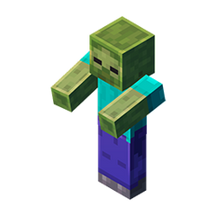
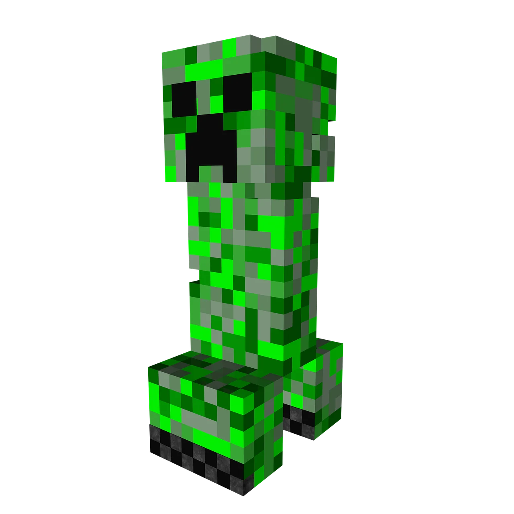
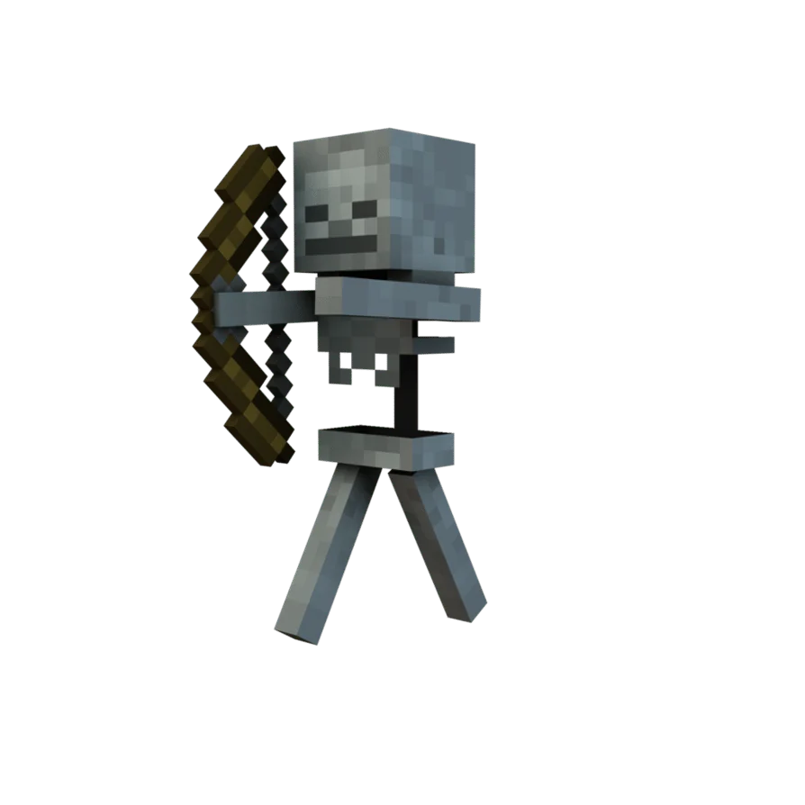
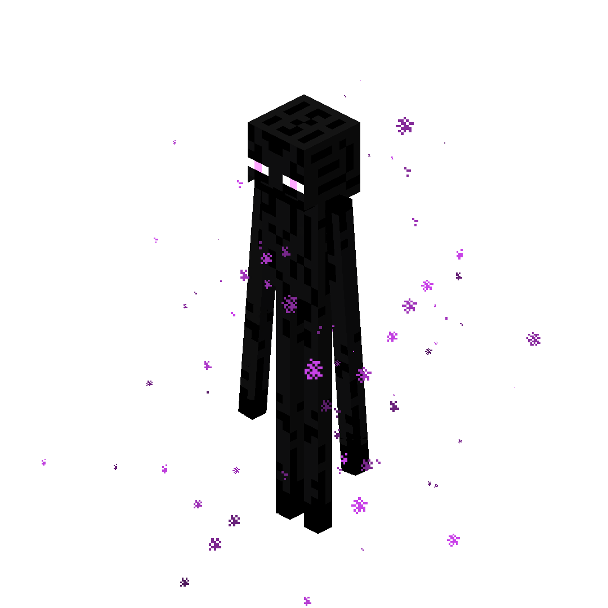
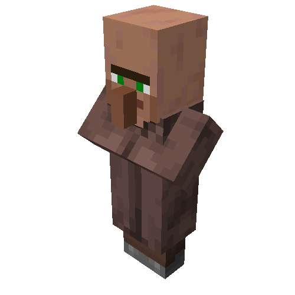
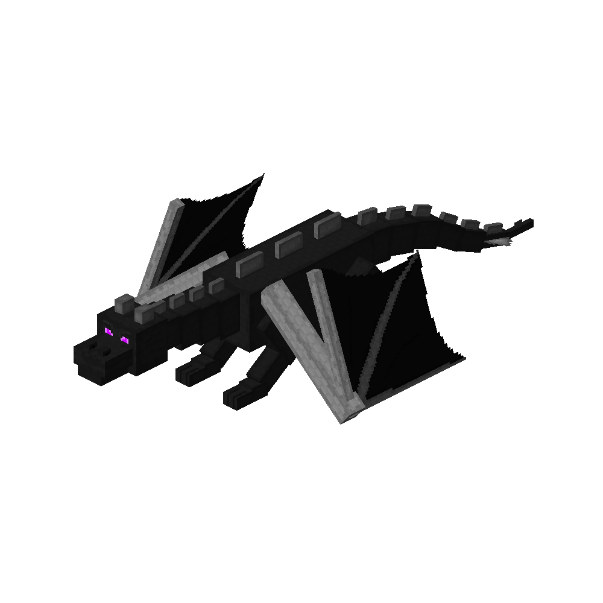

-

Zombie
Criatura hostil común que persigue a los jugadores cuerpo a cuerpo y se quema con la luz del sol.
-

Creeper
Monstruo sigiloso que se aproxima en silencio y explota al estar cerca del jugador, destruyendo bloques.
-

Esqueleto
Enemigo distante equipado con arco y flechas que ataca desde lejos y también arde bajo la luz solar.
-

Enderman
Criatura neutral de gran altura que se teletransporta, recoge bloques y ataca ferozmente si se le mira a los ojos.
-

Aldeano
Mob pacífico que habita en las aldeas y permite comerciar diversos objetos e insumos por esmeraldas.
-

Ender Dragon
Jefe final del juego que habita en la dimensión del End, vuela sobre la isla principal y lanza ataques de aliento ácido.